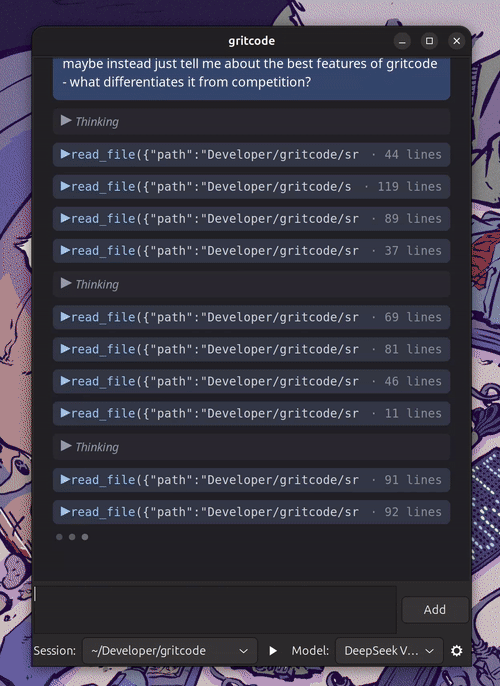

AI coding that doesn't
break the bank.
A native desktop chat client that connects directly to DeepSeek. Same quality as the expensive models — at a fraction of the cost. Free tier included, no sign-up needed.
Built with wxWidgets in C++20. ~10 MB binary, ~50 MB RAM at rest. No Electron, no bloat. Opens instantly.

Download
Always links to the latest release — no need to check back for updates.
Why pay more?
Claude and OpenAI charge a premium. DeepSeek delivers the same coding performance for pennies. We connect you directly.
$0.00 / month
Start for free
The default model works anonymously. No API key, no credit card, no sign-up. Just open the app and start building.
~10× cheaper
DeepSeek-direct pricing
Bring your own DeepSeek key. A heavy day of coding costs cents. The same workload on Claude costs dollars.
No middleman
You talk to the model
No platform markup, no subscription tiers, no per-seat licensing. Just your code and the AI.
Runs like it should
A single native binary. No Electron, no Chromium, no JavaScript runtime. Opens before you finish blinking.
Zero idle tax
Event-driven architecture. When you're not typing, Gritcode uses no CPU at all.
Linux & macOS
Same CMake build, same experience. Native on both platforms.
Feels at home
Native OS widgets. Automatically follows your system dark/light theme.
Tiny footprint
~10 MB binary, ~50 MB RAM. Hundreds of MB less than Electron alternatives like T3 Code, OpenCode GUI, or Claude Code GUI.
Features
Streaming markdown
Headings, code blocks, bold, italic, inline code — rendered live as the model responds.
▶ Play button
One click builds and runs your project. No AI roundtrip needed — just straight execution.
Tool calls
The AI runs bash, reads/writes/edits files, lists directories, greps, fetches URLs.
Cross-project memory
SQLite-backed full-text search across all your sessions. Recall past work instantly.
No API key needed
Free tier works anonymously. Bring your own DeepSeek key when you want more power.
Native themes
Tracks your system dark/light preference automatically. No config needed.
Build from source
Prefer to build yourself? Grab the source and go.
Linux
sudo apt install build-essential cmake ninja-build pkg-config \
libwxgtk3.2-dev libgtk-3-dev libcurl4-openssl-dev \
libsqlite3-dev libsecret-1-dev
git clone https://github.com/lszl84/gritcode.git
cd gritcode
cmake --preset release
cmake --build --preset release
./build/gritcodemacOS
brew install cmake ninja
git clone https://github.com/lszl84/gritcode.git
cd gritcode
cmake --preset release
cmake --build --preset release
open ./build/gritcode.appSupport the project
Built by one person with help from AI agents. No VC backing. Sponsor development to help grow the project.
♥ Become a GitHub Sponsor